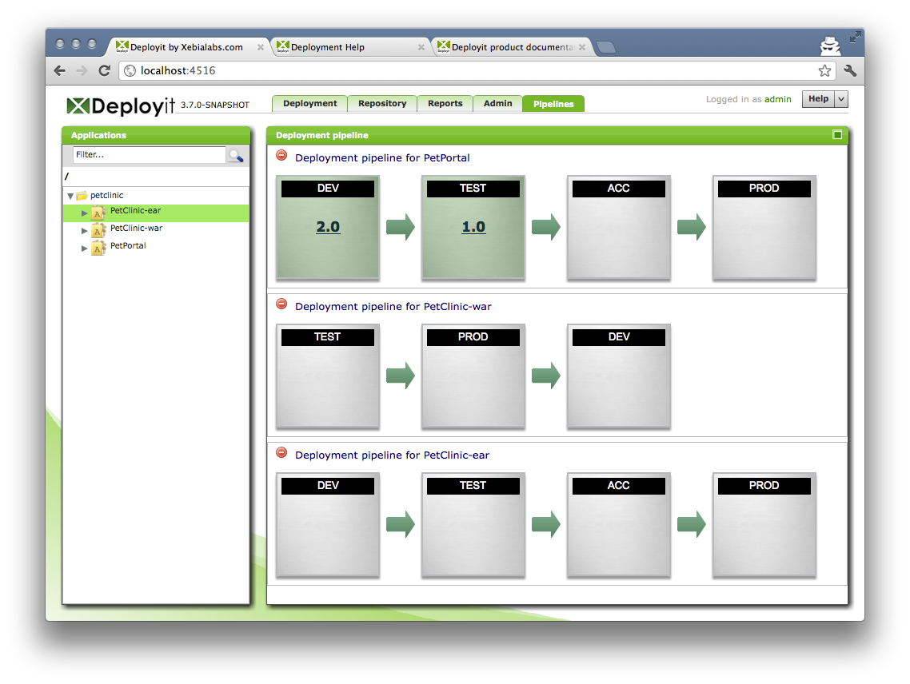
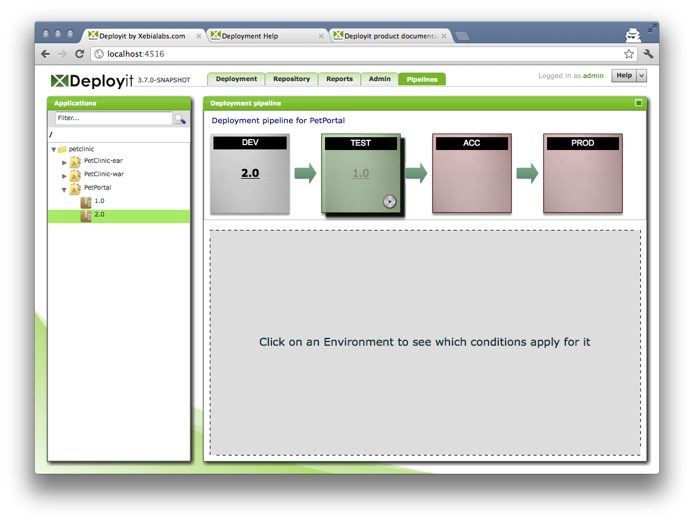
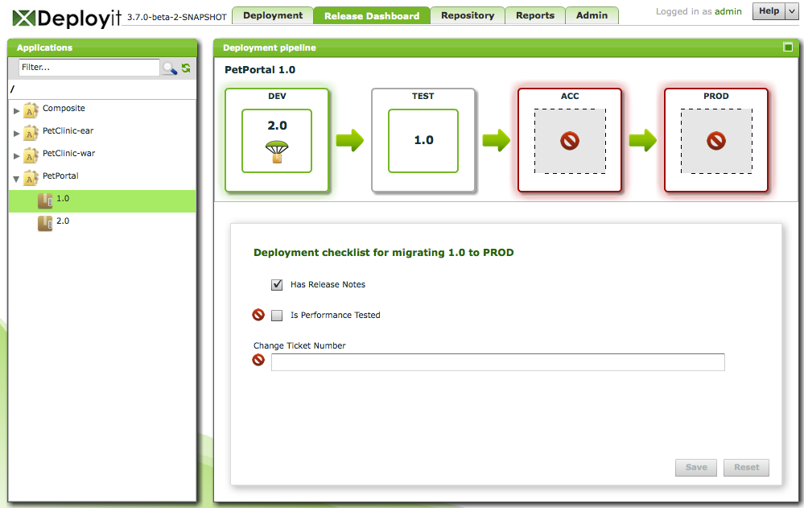

This screen shows the Release Dashboard and selected deployment pipelines. The following is an example of the Release Dashboard screen:

The screen consists of the following components:
The Package Browser is used to locate applications and packages in Deployit. It functions in the same way as the Package Browser on the other screens, with the exception that importing, moving CIs and the context menu are not available.
In the example Release Dashboard, the environments DEV, TEST, ACC and PROD are configured to be the deployment pipeline for the PetPortal application. This screen shows you which versions of the PetPortal application are currently deployed to each environment in the pipeline.
Click on other applications to display multiple deployment pipelines side-by-side. Click on the cross in the top-left corner to remove the pipeline.
To display the deployment pipeline for a specific application version, click on the application version in the Application Browser or, alternatively, click on the application version number in the application deployment pipeline. The Release Dashboard shows a deployment pipeline for the selected version:

Here, you see all environments in the deployment pipeline and which version is deployed where. The focus here is on the selected application version, PetPortal version 2.0. Each environment for which the deployment checklist has been completed are outlined in green. A deploy button is shown in environment, indicating a deployment can be started. Environments for which the checklist has not yet been completed are outlined in red.
Before promoting an application version to a new environment, the deployment checklist for this package and environment must be met. Click on the environment name to show the deployment checklist for the application version and environment:

Conditions that are not met are marked with a stop sign. Check a checkbox or fill out a string field and click the Save button to satisfy the condition. If all items are satisfied, the environment will turn green, indicating that the application version can be promoted to the target environment.
When the checklist for a particular version and environment has been filled out, a Deploy button appears on the environment. Clicking this button will start a new deployment on the Deployment tab. The deployment can be configured and executed in the regular way.